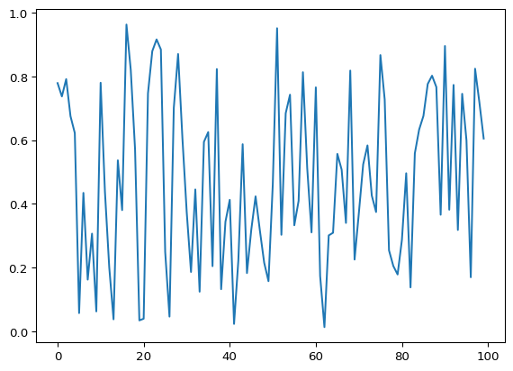
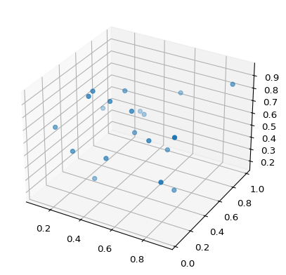

#pip install numpyMath for deep learning
Chapter 01 - Setting the stage
Installing the toolkits
#pip install scipy#pip install matplotlib#pip install scikit-learnNumPy
import numpy as np
np.__version__'2.2.4'Defining arrays
a = np.array([1,2,3,4])aarray([1, 2, 3, 4])a.size4a.shape(4,)a.dtypedtype('int64')b = np.array([[1,2,3,4],[5,6,7,8]])
print(b)
b.shape[[1 2 3 4]
[5 6 7 8]](2, 4)Data types
| NumPy name | Equivalent C type | Range |
|---|---|---|
| float64 | double | ± [2.225 x 10-308, 1.798 x 10308] |
| float32 | float | ± [1.175 x 10-38, 3.403 x 1038] |
| int64 | long long | [-263, 263 -1] |
| unit64 | unsigned long long | [0, 264 -1] |
| int32 | long | [-231, 231 -1] |
| uint32 | unsigned long | [0, 232 -1] |
| uint8 | unsigned char | [0, 255 = 28 -1] |
a = np.array([1,2,3,4], dtype="uint8")
print(a.dtype)
a = np.array([1,2,3,4], dtype="int16")
a = np.array([1,2,3,4], dtype="int32")uint8b = np.array([1,2,3,4.0])
print(b.dtype)
b = np.array([1,2,3,4.0], dtype="float32")float64c = np.array([111,222,333,444], dtype="uint8")
c--------------------------------------------------------------------------- OverflowError Traceback (most recent call last) Cell In[14], line 1 ----> 1 c = np.array([111,222,333,444], dtype="uint8") 2 c OverflowError: Python integer 333 out of bounds for uint8
2D arrays
d = np.array([[1,2,3],[4,5,6],[7,8,9]])
print(d.shape)
print(d.size)
print(d)(3, 3)
9
[[1 2 3]
[4 5 6]
[7 8 9]]d[1,2]np.int64(6)Zeros and Ones
a = np.zeros((3,4), dtype="uint32")
a[0,3] = 42
a[1,1] = 66
aarray([[ 0, 0, 0, 42],
[ 0, 66, 0, 0],
[ 0, 0, 0, 0]], dtype=uint32)b = 11*np.ones((3,1))
barray([[11.],
[11.],
[11.]])Advanced indexing
a = np.arange(12).reshape((3,4))
aarray([[ 0, 1, 2, 3],
[ 4, 5, 6, 7],
[ 8, 9, 10, 11]])a[1]array([4, 5, 6, 7])a[1] = [44,55,66,77]
aarray([[ 0, 1, 2, 3],
[44, 55, 66, 77],
[ 8, 9, 10, 11]])a[:2]array([[ 0, 1, 2, 3],
[44, 55, 66, 77]])a[:2,:]array([[ 0, 1, 2, 3],
[44, 55, 66, 77]])a[:2,:3]array([[ 0, 1, 2],
[44, 55, 66]])b = np.arange(12)
barray([ 0, 1, 2, 3, 4, 5, 6, 7, 8, 9, 10, 11])b[::2]array([ 0, 2, 4, 6, 8, 10])b[::3]array([0, 3, 6, 9])b[::-1]array([11, 10, 9, 8, 7, 6, 5, 4, 3, 2, 1, 0])a = np.arange(24).reshape((4,3,2))
aarray([[[ 0, 1],
[ 2, 3],
[ 4, 5]],
[[ 6, 7],
[ 8, 9],
[10, 11]],
[[12, 13],
[14, 15],
[16, 17]],
[[18, 19],
[20, 21],
[22, 23]]])a[1,:,:] = [[11,22],[33,44],[55,66]]
aarray([[[ 0, 1],
[ 2, 3],
[ 4, 5]],
[[11, 22],
[33, 44],
[55, 66]],
[[12, 13],
[14, 15],
[16, 17]],
[[18, 19],
[20, 21],
[22, 23]]])a[2,...] = [[99,99],[99,99],[99,99]]
aarray([[[ 0, 1],
[ 2, 3],
[ 4, 5]],
[[11, 22],
[33, 44],
[55, 66]],
[[99, 99],
[99, 99],
[99, 99]],
[[18, 19],
[20, 21],
[22, 23]]])Reading and writing to disk
a = np.random.randint(0,5,(3,4))
aarray([[0, 3, 2, 0],
[2, 4, 4, 3],
[4, 3, 4, 0]], dtype=int32)np.save("random.npy",a)b = np.load("random.npy")
barray([[0, 3, 2, 0],
[2, 4, 4, 3],
[4, 3, 4, 0]], dtype=int32)SciPy
import scipy
scipy.__version__'1.15.2'from scipy.stats import ttest_ind
a = np.random.normal(0,1,1000)
b = np.random.normal(0,0.5,1000)
c = np.random.normal(0.1,1,1000)ttest_ind(a,b)TtestResult(statistic=np.float64(-0.4550012176243561), pvalue=np.float64(0.649157796911606), df=np.float64(1998.0))ttest_ind(a,c)TtestResult(statistic=np.float64(-3.6598936958036505), pvalue=np.float64(0.00025886635236124463), df=np.float64(1998.0))Matplotlib
import numpy as np
import matplotlib.pylab as pltx = np.random.random(100)
plt.plot(x)
plt.show()
from mpl_toolkits.mplot3d import Axes3D
import matplotlib.pylab as plt
import numpy as np
x = np.random.random(20)
y = np.random.random(20)
z = np.random.random(20)
fig = plt.figure()
ax = fig.add_subplot(111, projection='3d')
ax.scatter(x,y,z)
plt.show()
Scikit-Learn
import numpy as np
from sklearn.datasets import load_digits
from sklearn.neural_network import MLPClassifierd = load_digits()
digits = d["data"]
labels = d["target"]N = 200
idx = np.argsort(np.random.random(len(labels)))
x_test, y_test = digits[idx[:N]], labels[idx[:N]]
x_train, y_train = digits[idx[N:]], labels[idx[N:]]clf = MLPClassifier(hidden_layer_sizes=(128,))
clf.fit(x_train, y_train)MLPClassifier(hidden_layer_sizes=(128,))In a Jupyter environment, please rerun this cell to show the HTML representation or trust the notebook.
On GitHub, the HTML representation is unable to render, please try loading this page with nbviewer.org.
MLPClassifier(hidden_layer_sizes=(128,))
score = clf.score(x_test, y_test)
pred = clf.predict(x_test)
err = np.where(y_test != pred)[0]
print(f"score: {score}")
print("errors:")
print(f"actual: {y_test[err]}")
print(f"predicted: {pred[err]}")score: 0.985
errors:
actual: [9 8 0]
predicted: [5 5 6]